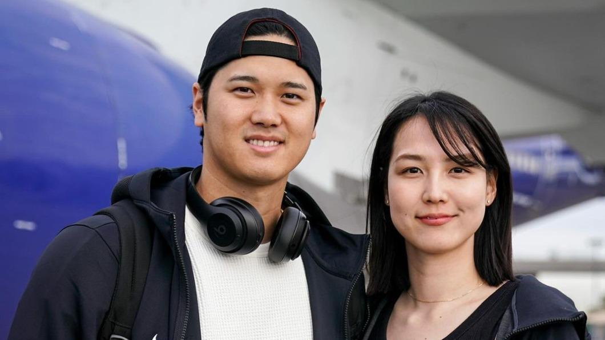
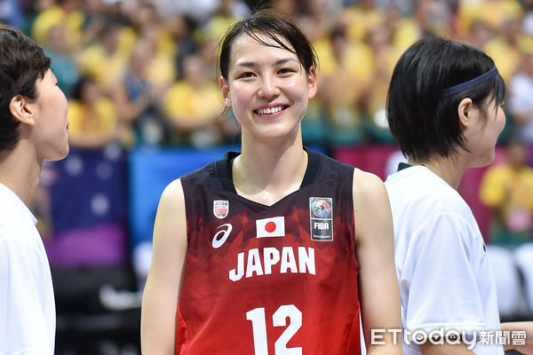

NEWS
大谷翔平
（日語：大谷 翔平／おおたに しょうへい Ōtani Shōhei，1994年7月5日—），外號Sho-time，[2] 為日本職業棒球選手，出身於岩手縣水澤市（今 奧州市），畢業於同縣的花卷東高等學校。目前效力於美國職棒大聯盟洛杉磯道奇，主要擔任投手及指定打擊（即投打「二刀流」）。2012年自日本職棒太平洋聯盟的北海道日本火腿鬥士的第一指名，從此開啟職業棒球生涯。

田中真美子
，1996年12月11日出生於日本東京都日野市，畢業於日野市立仲田小學校、日野市立日野第一中學校。東京成德大學高校畢業後，進入早稻田大學。

田中真美子
曾多次入選日本青年國家隊，包括2011年亞洲U16、2012年世界U17、2014年亞洲U18、2017年世大運、2019年世大運等，主要位置為中鋒。
2019年，
田中真美子
加入WJBL富士通紅浪隊，在該隊的位置為大前鋒[2]。2021年，入選2021年亞洲盃女子籃球賽日本代表選拔隊，但最終未進入正選12人名單[1]。同年入選2021年FIBA 3x3 女子奧運資格賽日本代表隊預備隊，但未進入正選名單[6]。2023年從富士通紅浪隊引退[7]。
田中真美子
（日語：田中 真美子／たなか まみこ Tanaka Mamiko，1996年12月11日—），日本前女子籃球員，2019年—2023年曾效力於WJBL富士通紅浪女籃隊，位置為大前鋒[3]。2023年宣佈引退，2024年結婚，丈夫為日本棒球巨星
大谷翔平
。